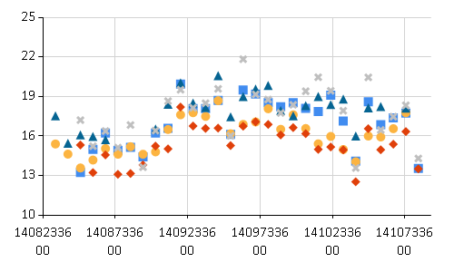
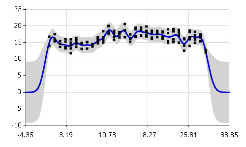
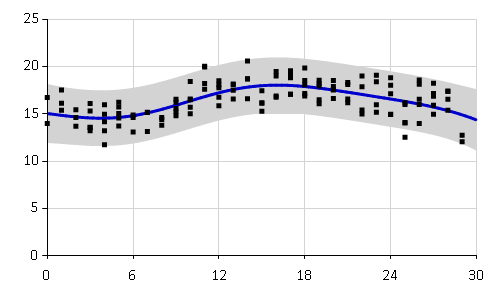
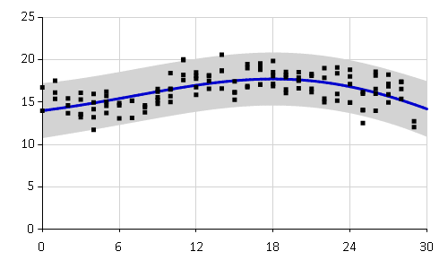

Analyzing temperature data with Ariadne
This FsLab journal shows an example usage of Ariadne, F# library for Gaussian process regression.
Let's say I want to know how the weather was over the last few weeks in Cambridge, UK. Of course, I can download historical data from the Open Weather Map and analyse them. But what if I do not trust the summary data they provide for cities? I want to go to the source and download actual data measured at individual weather stations. If I download historical data from several nearby locations, I should be able to get some idea about the weather in the area.
Open Weather Map provides all their data in Json format, which means I can use F# Data to access all the information. First, we need to open all the necessary namespaces. I will also use F# Charting to generate some figures.
1: 2: 3: 4: 5: 6: |
#r "Ariadne.dll" open Ariadne.GaussianProcess open Ariadne.Kernels open FSharp.Data open FSharp.Charting |
Now I can download data directly from Open Weather Map. I create a query which requests a specific number of weather stations which are closest to a specific location. Here I use Json type provider to load a list of 5 closest weather stations.
1: 2: 3: 4: 5: 6: 7: 8: 9: 10: 11: 12: |
// Json type provider type WeatherStations = JsonProvider<"http://api.openweathermap.org/data/2.5/station/find?lat=52.2&lon=0.12&cnt=5"> // Cambridge location let latitude = 52.2 let longitude = 0.12 let count = 5 // load data from Open Weather Map let query = @"http://api.openweathermap.org/data/2.5/station/find?lat=" + string latitude + @"&lon=" + string longitude + "&cnt=" + string count let stations = WeatherStations.Load(query) |
We can also check how far are the weather stations from Cambridge. It seems that they all lie approximately within 15 miles from Cambridge.
1: 2: |
stations |> Array.iter (fun station -> printfn "%.2f" (float station.Distance)) |
3.49
3.79
5.84
13.00
15.71
Now we send a query to Open Weather Map asking for historical data for each of the five weather stations. The constructed query should return summarized daily weather data approximately for the past month. Again, I am using Json type provider to access the data.
1: 2: 3: 4: 5: 6: 7: 8: 9: 10: |
type StationData = JsonProvider<"http://api.openweathermap.org/data/2.5/history/station?id=51473"> let stationIds = stations |> Array.map (fun station -> station.Station.Id) let stationQuery (station:int) = @"http://api.openweathermap.org/data/2.5/history/station?id=" + string station let stationData = stationIds |> Array.map (fun id -> StationData.Load(stationQuery id)) |
After this step, we should have all the historical data for each station in stationData.
I am interested in temperatures over the past month, so I extract only the average
temperatures for each day. In general, station data contain also other information
like atmospheric pressure, precipitation or wind speed.
In the following code, I extract the temperature in Celsius, and return
it together with its corresponding time of measurement.
1: 2: 3: 4: 5: 6: 7: 8: 9: 10: 11: 12: 13: |
// Extract temperatures let temperatures = stationData |> Array.map (fun s -> s.List |> Array.map (fun dt -> // raw temperatures are in Kelvin, transform to Celsius dt.Dt , (float dt.Temp.V) - 273.15)) // Plot temperature data temperatures |> Array.map (fun ts -> Chart.Point(ts, MarkerSize=10)) |> Chart.Combine |> Chart.WithYAxis(Min=10.0, Max=25.0) |

Notice that the data are quite noisy. Also, we have different number of observations from different weather stations. Each day, sometimes there are 5 observations, sometimes only 2, sometimes there are outliers. Gaussian processes are a great tool to model this form of data because they take all the noise and uncertainty into account.
Another thing to notice is that Open Weather Map provides all date and time
information in unix time.
To bring all the time into a more interpretable range, I change the scale
into days. I also create an F# record containing Locations and Observations
which is used by Ariadne
to pass data into Gaussian process.
1: 2: 3: 4: 5: 6: 7: 8: 9: 10: 11: |
let startTime = temperatures |> Array.map (fun ts -> Array.minBy fst ts |> fst) |> Array.min let data = temperatures |> Array.map (fun temps -> {Locations = Array.map (fun (t,_) -> float (t - startTime) / (24.0 * 3600.0)) temps Observations = Array.map snd temps}) |
Now we can construct a Gaussian process with squared exponential covariance function. Squared exponential kernel generally characterizes very smooth functions.
1: 2: 3: 4: 5: |
let lengthscale = 1.0 let signalVariance = 20.0 let noiseVariance = 1.0 let sqExp = SquaredExp.SquaredExp(lengthscale, signalVariance, noiseVariance) |
I guessed some values for hyperparameters of the squared exponential covariance function. The first hyperparameter is the lengthscale. Its value regulates how quickly the function values change, how wide squiggles we expect to see in the function. Lengthscale of 1 assumes that the temperature changes quite quickly from day to day.
The second parameter is the signal variance which regulates how far does the function go from its prior mean. Since the prior mean function of our Gaussian process is zero and I am being lazy by leaving the data on their original scale, I have to set quite a large variance. The last parameter is the noise variance which models the amount of noise present in the observed data. You can find more details on interpretation of each hyperparameter in the documentation.
With hyperparameters prepared, we can finally fit the Gaussian process regression model.
1: 2: |
let gp = sqExp.GaussianProcess() gp |> plot data |

The graph shows the mean estimated temperature as a blue line. The grey region corresponds to a 95% confidence interval. The fit is quite good, the confidence interval captures most of the observed data and the mean captures the general trend. You can see that the function goes to zero rapidly outside of the observed region. This is because the Gaussian process prediction reverts to the prior mean value when there are no observations. Note that the confidence interval is also getting much wider. Generally we can reliably extrapolate only about one lengthscale outside of the data regions.
Optimizing hyperparameters
Guessing values hyperparameters is not a very reliable method of fitting a model. Ariadne provides two basic methods for optimizing hyperparameters:
- Metropolis-Hastings posterior sampling
- simple gradient descent
Both methods are optimizing the log likelihood of the hyperparameters given observed data. The first method, Metropolis-Hastings, is a probabilistic method which gives us the mean estimate of the posterior distribution given observations and our prior beliefs about hyperparameter values. This is the proper Bayesian method for optimizing hyperparameters.
First we need to set prior distributions for each hyperparameter. Here I am using a Log-normal prior because all hyperparamters have to be larger than zero. The prior distributions are centred around my initial guessed values.
1: 2: 3: 4: 5: 6: 7: 8: 9: 10: 11: 12: 13: 14: 15: 16: |
open MathNet.Numerics open Ariadne.Optimization open Ariadne.Optimization.MetropolisHastings let rnd = System.Random(0) let lengthscalePrior = Distributions.LogNormal.WithMeanVariance(1.0, 1.0, rnd) let variancePrior = Distributions.LogNormal.WithMeanVariance(20.0, 5.0, rnd) let noisePrior = Distributions.LogNormal.WithMeanVariance(0.5, 1.0, rnd) // construct the prior distribution let prior = SquaredExp.Prior(lengthscalePrior, variancePrior, noisePrior) // set parameters for Metropolis-Hastings sampler let settings = { Burnin = 500 // Number of burn-in iterations Lag = 5 // Thinning of posterior samples SampleSize = 100 } // Number of thinned posterior samples |
Metropolis-Hastings sampler in Ariadne samples from the posterior distribution and returns the mean estimate for each hyperparameter.
1: 2: 3: 4: 5: 6: 7: |
// Run the sampler let kernelMH = SquaredExp.optimizeMetropolis data settings prior sqExp // Construct updated Gaussian process let gpMH = kernelMH.GaussianProcess() gpMH |> plot data |> Chart.WithXAxis(Min=0.0, Max = 30.0) |
1: 2: |
printfn "Original Gaussian process likelihood: %f" (gp.LogLikelihood data) printfn "MH Gaussian process likelihood: %f" (gpMH.LogLikelihood data) |
Original Gaussian process likelihood: -333.369341
MH Gaussian process likelihood: -246.112983

Log likelihood of the new Gaussian process increased quite significantly, which means that the optimized Gaussian process provides a much better fit to the observed training data than the original one.
The second option how to select values of hyperparameters is standard nonlinear optimization. Ariadne currently implements only basic gradient descent algorithm. This method uses derivatives of the log likelihood function to find a local optimum.
1: 2: 3: 4: 5: 6: 7: 8: 9: 10: 11: 12: 13: 14: |
let gdSettings = { GradientDescent.Iterations = 1000; GradientDescent.StepSize = 0.1} let gradientFunction parameters = SquaredExp.fullGradient data parameters // Run gradient descent let kernelGD = gradientDescent gradientFunction gdSettings (sqExp.Parameters) |> SquaredExp.ofParameters // Create optimized Gaussian process let gpGD = kernelGD.GaussianProcess() gpGD |> plotRange (0.0, 30.0) data |
1: 2: |
printfn "Original Gaussian process likelihood: %f" (gp.LogLikelihood data) printfn "GD Gaussian process likelihood: %f" (gpGD.LogLikelihood data) |
Original Gaussian process likelihood: -333.369341
GD Gaussian process likelihood: -241.782424

Gradient descent found different optimum than Metropolis-Hastings. The fit seems to capture mainly the overall trend in the temperatures over the whole month.
The two methods generally yield different resulting models. Metropolis-Hastings takes into account our prior beliefs about hyperparameter values and it also samples from the true posterior. Gradient descent finds only a single local maximum of the nonlinear log likelihood function.
from Ariadne
from Ariadne
Full name: WeatherData.WeatherStations
Full name: FSharp.Data.JsonProvider
<summary>Typed representation of a JSON document.</summary>
<param name='Sample'>Location of a JSON sample file or a string containing a sample JSON document.</param>
<param name='SampleIsList'>If true, sample should be a list of individual samples for the inference.</param>
<param name='RootName'>The name to be used to the root type. Defaults to `Root`.</param>
<param name='Culture'>The culture used for parsing numbers and dates. Defaults to the invariant culture.</param>
<param name='Encoding'>The encoding used to read the sample. You can specify either the character set name or the codepage number. Defaults to UTF8 for files, and to ISO-8859-1 the for HTTP requests, unless `charset` is specified in the `Content-Type` response header.</param>
<param name='ResolutionFolder'>A directory that is used when resolving relative file references (at design time and in hosted execution).</param>
<param name='EmbeddedResource'>When specified, the type provider first attempts to load the sample from the specified resource
(e.g. 'MyCompany.MyAssembly, resource_name.json'). This is useful when exposing types generated by the type provider.</param>
Full name: WeatherData.latitude
Full name: WeatherData.longitude
Full name: WeatherData.count
Full name: WeatherData.query
val string : value:'T -> string
Full name: Microsoft.FSharp.Core.Operators.string
--------------------
type string = System.String
Full name: Microsoft.FSharp.Core.string
Full name: WeatherData.stations
Loads JSON from the specified uri
JsonProvider<...>.Load(reader: System.IO.TextReader) : JsonProvider<...>.Root []
Loads JSON from the specified reader
JsonProvider<...>.Load(stream: System.IO.Stream) : JsonProvider<...>.Root []
Loads JSON from the specified stream
from Microsoft.FSharp.Collections
Full name: Microsoft.FSharp.Collections.Array.iter
Full name: Microsoft.FSharp.Core.ExtraTopLevelOperators.printfn
val float : value:'T -> float (requires member op_Explicit)
Full name: Microsoft.FSharp.Core.Operators.float
--------------------
type float = System.Double
Full name: Microsoft.FSharp.Core.float
--------------------
type float<'Measure> = float
Full name: Microsoft.FSharp.Core.float<_>
Full name: WeatherData.StationData
Full name: WeatherData.stationIds
Full name: Microsoft.FSharp.Collections.Array.map
Full name: WeatherData.stationQuery
val int : value:'T -> int (requires member op_Explicit)
Full name: Microsoft.FSharp.Core.Operators.int
--------------------
type int = int32
Full name: Microsoft.FSharp.Core.int
--------------------
type int<'Measure> = int
Full name: Microsoft.FSharp.Core.int<_>
Full name: WeatherData.stationData
Loads JSON from the specified uri
JsonProvider<...>.Load(reader: System.IO.TextReader) : JsonProvider<...>.Root
Loads JSON from the specified reader
JsonProvider<...>.Load(stream: System.IO.Stream) : JsonProvider<...>.Root
Loads JSON from the specified stream
Full name: WeatherData.temperatures
static member Area : data:seq<#value> * ?Name:string * ?Title:string * ?Labels:#seq<string> * ?Color:Color * ?XTitle:string * ?YTitle:string -> GenericChart
static member Area : data:seq<#key * #value> * ?Name:string * ?Title:string * ?Labels:#seq<string> * ?Color:Color * ?XTitle:string * ?YTitle:string -> GenericChart
static member Bar : data:seq<#value> * ?Name:string * ?Title:string * ?Labels:#seq<string> * ?Color:Color * ?XTitle:string * ?YTitle:string -> GenericChart
static member Bar : data:seq<#key * #value> * ?Name:string * ?Title:string * ?Labels:#seq<string> * ?Color:Color * ?XTitle:string * ?YTitle:string -> GenericChart
static member BoxPlotFromData : data:seq<#key * #seq<'a2>> * ?Name:string * ?Title:string * ?Color:Color * ?XTitle:string * ?YTitle:string * ?Percentile:int * ?ShowAverage:bool * ?ShowMedian:bool * ?ShowUnusualValues:bool * ?WhiskerPercentile:int -> GenericChart (requires 'a2 :> value)
static member BoxPlotFromStatistics : data:seq<#key * #value * #value * #value * #value * #value * #value> * ?Name:string * ?Title:string * ?Labels:#seq<string> * ?Color:Color * ?XTitle:string * ?YTitle:string * ?Percentile:int * ?ShowAverage:bool * ?ShowMedian:bool * ?ShowUnusualValues:bool * ?WhiskerPercentile:int -> GenericChart
static member Bubble : data:seq<#value * #value> * ?Name:string * ?Title:string * ?Labels:#seq<string> * ?Color:Color * ?XTitle:string * ?YTitle:string * ?BubbleMaxSize:int * ?BubbleMinSize:int * ?BubbleScaleMax:float * ?BubbleScaleMin:float * ?UseSizeForLabel:bool -> GenericChart
static member Bubble : data:seq<#key * #value * #value> * ?Name:string * ?Title:string * ?Labels:#seq<string> * ?Color:Color * ?XTitle:string * ?YTitle:string * ?BubbleMaxSize:int * ?BubbleMinSize:int * ?BubbleScaleMax:float * ?BubbleScaleMin:float * ?UseSizeForLabel:bool -> GenericChart
static member Candlestick : data:seq<#value * #value * #value * #value> * ?Name:string * ?Title:string * ?Labels:#seq<string> * ?Color:Color * ?XTitle:string * ?YTitle:string -> CandlestickChart
static member Candlestick : data:seq<#key * #value * #value * #value * #value> * ?Name:string * ?Title:string * ?Labels:#seq<string> * ?Color:Color * ?XTitle:string * ?YTitle:string -> CandlestickChart
...
Full name: FSharp.Charting.Chart
static member Chart.Point : data:seq<#key * #value> * ?Name:string * ?Title:string * ?Labels:#seq<string> * ?Color:System.Drawing.Color * ?XTitle:string * ?YTitle:string * ?MarkerColor:System.Drawing.Color * ?MarkerSize:int -> ChartTypes.GenericChart
Full name: WeatherData.startTime
Full name: Microsoft.FSharp.Collections.Array.minBy
Full name: Microsoft.FSharp.Core.Operators.fst
Full name: Microsoft.FSharp.Collections.Array.min
Full name: WeatherData.data
Full name: Microsoft.FSharp.Core.Operators.snd
Full name: WeatherData.lengthscale
Full name: WeatherData.signalVariance
Full name: WeatherData.noiseVariance
Full name: WeatherData.sqExp
from Ariadne.Kernels
type SquaredExp =
new : lengthscale:float * signalVariance:float * noiseVariance:float -> SquaredExp
member GaussianProcess : unit -> GaussianProcess<float>
member Kernel : x1:float * x2:float -> float
override ToString : unit -> string
member Lengthscale : float
member NoiseVariance : float
member Parameters : float []
member SignalVariance : float
Full name: Ariadne.Kernels.SquaredExp.SquaredExp
--------------------
new : lengthscale:float * signalVariance:float * noiseVariance:float -> SquaredExp.SquaredExp
Full name: WeatherData.gp
Full name: Ariadne.GaussianProcess.plot
from Ariadne
from Ariadne.Optimization
Full name: WeatherData.rnd
type Random =
new : unit -> Random + 1 overload
member Next : unit -> int + 2 overloads
member NextBytes : buffer:byte[] -> unit
member NextDouble : unit -> float
Full name: System.Random
--------------------
System.Random() : unit
System.Random(Seed: int) : unit
Full name: WeatherData.lengthscalePrior
type LogNormal =
new : mu:float * sigma:float -> LogNormal + 1 overload
member CumulativeDistribution : x:float -> float
member Density : x:float -> float
member DensityLn : x:float -> float
member Entropy : float
member InverseCumulativeDistribution : p:float -> float
member Maximum : float
member Mean : float
member Median : float
member Minimum : float
...
Full name: MathNet.Numerics.Distributions.LogNormal
--------------------
Distributions.LogNormal(mu: float, sigma: float) : unit
Distributions.LogNormal(mu: float, sigma: float, randomSource: System.Random) : unit
Full name: WeatherData.variancePrior
Full name: WeatherData.noisePrior
Full name: WeatherData.prior
module SquaredExp
from Ariadne.Optimization
--------------------
module SquaredExp
from Ariadne.Kernels
type Prior =
new : lengthscalePrior:LogNormal * signalVariancePrior:LogNormal * noiseVariancePrior:LogNormal -> Prior
member DensityLn : se:SquaredExp -> float
member ParamsDensityLn : parameters:float [] -> float
member Sample : unit -> SquaredExp
member LengthscalePrior : LogNormal
member NoiseVariancePrior : LogNormal
member SignalVariancePrior : LogNormal
Full name: Ariadne.Kernels.SquaredExp.Prior
--------------------
new : lengthscalePrior:Distributions.LogNormal * signalVariancePrior:Distributions.LogNormal * noiseVariancePrior:Distributions.LogNormal -> SquaredExp.Prior
Full name: WeatherData.settings
Full name: WeatherData.kernelMH
Full name: Ariadne.Optimization.SquaredExp.optimizeMetropolis
Full name: WeatherData.gpMH
Full name: WeatherData.gdSettings
from Ariadne.Optimization
Full name: WeatherData.gradientFunction
Full name: Ariadne.Kernels.SquaredExp.fullGradient
Full name: WeatherData.kernelGD
Full name: Ariadne.Optimization.gradientDescent
Full name: Ariadne.Kernels.SquaredExp.ofParameters
Full name: WeatherData.gpGD
Full name: Ariadne.GaussianProcess.plotRange